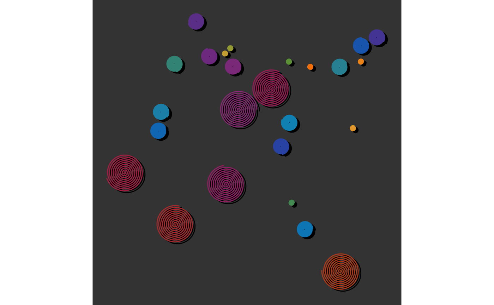
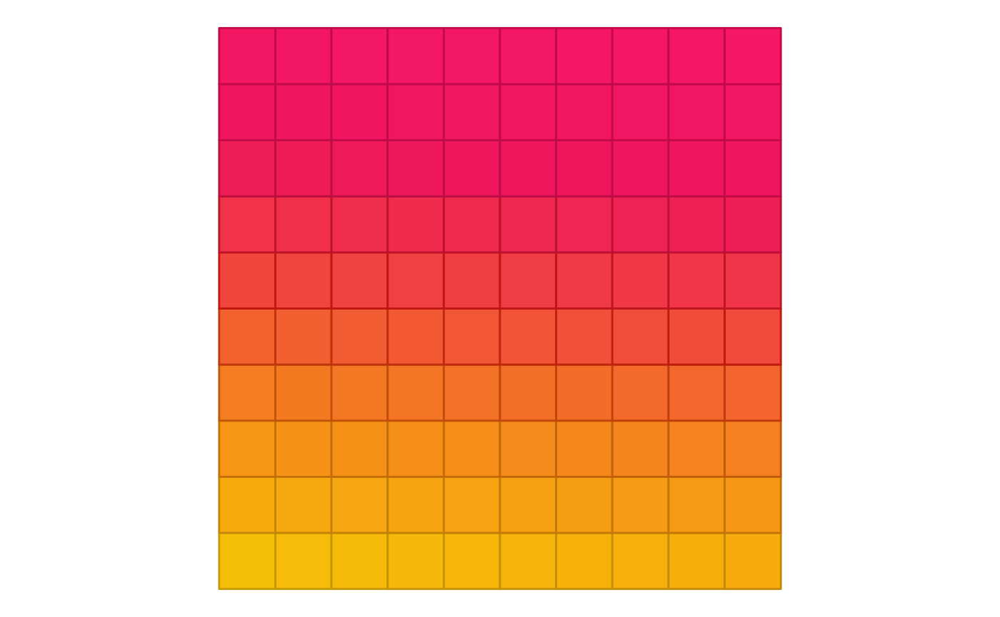

Introduction
This vignette goes over different artpack asset
creations and their recommended ggplot2
geoms that can be used when creating art in R with artpack and
ggplot2. To start, let’s look at a handy chart that can be used as a
reference for artpack users.
artpack Assets and Their Recommended ggplot2 geom
| artpack Asset Function | Recommended ggplot2 Geoms | grouping variable needed? | Miscellaneous Info |
|---|---|---|---|
circle_data() |
- geom_polygon - geom_path()
|
Maybe | - set group_var to TRUE if more than one
circle is being plotted - Use coord_equal() for
best results |
grid_maker() |
- geom_polygon - geom_path()
|
Yes | Note that grid_maker() was originally created just for
geom_polygon(), but it CAN be used with
geom_path(). geom_path() does not have a
fill argument. If you wish to create different sizes or colors for the grid squares with geom_path()
you’ll need to create unique values for each grouping. You can learn
more about this in the later section Making Sense of Grouping in
ggplot2
|
packer() |
- geom_polygon - geom_path()
|
Yes | Note that the data produced by packer() can be fed into
geom_polygon() and geom_path() regardless of
the circle_type that is set. When circle_type = "swirl", geom_path() is
suggested, but geom_polygon() can be used with varying
results. |
square_data() |
- geom_polygon - geom_path()
|
Maybe | N/A |
wave_data() |
- geom_polygon - geom_path()
|
Maybe | - set group_var to TRUE if more than one
wave is being plotted - Use coord_equal() for best
results |
Feeding in the Created artpack Data to ggplot Plots
The focus of artpack is to provide you with crafted data frames that can be easily used within ggplot2 plots. Note that there are different ways to place data into a ggplot:
Via aes()
With I()
#| fig-alt: "Scatter plot on dark background showing various colored circular points and concentric spiral patterns. Points include solid circles in blue, teal, purple, green, and orange, along with larger spiral/circular patterns in magenta, purple, and orange-red. The elements are randomly distributed across the plot area."
# install.packages("artpack")
library(ggplot2)
library(artpack)
set.seed(0515)
df_packed_circles <-
packer(
n = 25, big_r = 7, med_r = 3, small_r = 1,
min_x = 0, max_x = 100, min_y = 0, max_y = 100,
color_pal = art_pals("rainbow", 15),
circle_type = "swirl"
)
#> ⠙ Sampling for big-sized circles started
#> ✔ Sampling for big-sized circles started [105ms]
#>
#> ℹ Big-sized circles complete!
#> ✔ Big-sized circles complete! [18ms]
#>
#> ⠙ Sampling for medium-sized circles started
#> ✔ Sampling for medium-sized circles started [150ms]
#>
#> ℹ Medium-sized circles complete!
#> ✔ Medium-sized circles complete! [14ms]
#>
#> ⠙ Sampling for small-sized circles started
#> ✔ Sampling for small-sized circles started [81ms]
#>
#> ℹ Small-sized circles complete!
#> ✔ Small-sized circles complete! [21ms]
#>
df_packed_circles |>
ggplot(aes(x, y, group = group, color = I(color))) + # I (base R) takes the color values as-is and passes it through
theme_void() +
theme(plot.background = element_rect(fill = "#333333")) +
geom_path() +
coord_equal()
With scale_{xx}-type functions
#| fig-alt: "Scatter plot on dark background showing various colored circular points and concentric spiral patterns. Points include solid circles in blue, teal, purple, green, and orange, along with larger spiral/circular patterns in magenta, purple, and orange-red. The elements are randomly distributed across the plot area."
#|
df_packed_circles |>
ggplot(aes(x, y, group = group, color = color)) +
theme_void() +
theme(plot.background = element_rect(fill = "#333333")) +
scale_color_identity(guide = "none") + # Takes color values as-is and removes plot legend
geom_path() +
coord_equal()Via geom layers
#| fig-alt: "Similar scatter plot to previous with slight variations in positioning. Shows colored circular points and concentric spiral patterns on dark background, with solid circles in various colors (blue, teal, purple, green, orange) and larger decorative spiral elements in magenta, purple, and orange-red."
#|
df_packed_circles |>
ggplot(aes(x, y, group = group)) +
theme_void() +
theme(plot.background = element_rect(fill = "#333333")) +
geom_path(aes(x = x + 1, y = y - .7), color = "#000000") + # Changes made directly in the layer
geom_path(color = df_packed_circles$color) + # Column from df placed directly in the layer
coord_equal()
Making Sense of Grouping In ggplot2
One last important thing to remember about using ggplot2 for art, is
grouping. Getting comfortable with ggplot grouping is an essential skill
for creating generative art. When creating art on a ggplot, you can
think of it as drawing on a piece of paper in real life. Think of
“grouping” as your way of telling ggplot2 to “pick the pencil up” off
the “paper”. These grouping variables help ggplot to understand when to
“stop drawing” a line for a shape. Let’s look at a quick example using
the grid_maker() function:
#| fig-alt: "Heat map or grid visualization with color gradient from yellow at bottom to bright magenta/pink at top. The grid appears to be approximately 12x12 squares with smooth color transitions creating a temperature or intensity visualization."
#|
df_grid <-
grid_maker(
xlim = c(0,10),
ylim = c(0,10),
size = 10,
fill_pal = art_pals("sunnyside", 5),
color_pal = sapply(art_pals("sunnyside", 5), \(x) set_brightness(x, 0.40))
)
df_grid |>
ggplot(aes(x,y, group = group)) +
geom_polygon(
fill = df_grid$fill,
color = df_grid$color
) +
theme_void() +
coord_equal()
With the grouping function, the image looks as expected with nicely
colored squares in a grid. If we remove the group argument
from aes() in the ggplot() function:
#| fig-alt: "Grid-based visualization on yellow background showing a diagonal white triangular or wedge pattern. The triangle extends from the bottom-left corner toward the upper-right, creating a clear geometric division in the square grid layout."
#|
df_grid |>
ggplot(aes(x,y)) +
geom_polygon(
fill = df_grid$fill,
color = df_grid$color
) +
theme_void() +
coord_equal()It turns into a hot mess! This is because without a grouping
variable, ggplot doesn’t understand where the data for a square stops
and ends. Using groups allows more control over creative decisions and
can simplify your workflow by allowing you to create and use multiple
variables from a data frame within one geom layer. Remember that artpack
has additional
group-related functions to help you wrangle your group variables,
like the group_sample() function which allows you to sample
a data frame by groups (instead of just rows):
#| fig-alt: "Pixelated or mosaic-style visualization with irregular white and colored blocks. Uses a gradient color scheme from yellow at bottom through orange and red to magenta at top, creating an abstract pattern with white negative spaces throughout."
#|
set.seed(01234)
df_grid |>
group_sample(group = group, prop = .70) |>
ggplot(aes(x,y, group = group, fill = I(fill), color = I(color))) +
geom_polygon() +
theme_void() +
coord_equal()Wrapping Up
This vignette demonstrated how artpack’s asset creation functions can be integrated within ggplot2’s geom layers.
Remember that:
- Each artpack asset function works best with specific ggplot2 geoms (see reference table)
- Colors can be applied using
I(),scale_*_identity(), or directly in geom layers - Proper grouping is essential for multi-shape plots
- Functions like
group_sample()provide additional control over your artistic output